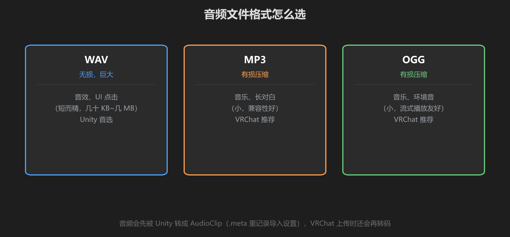
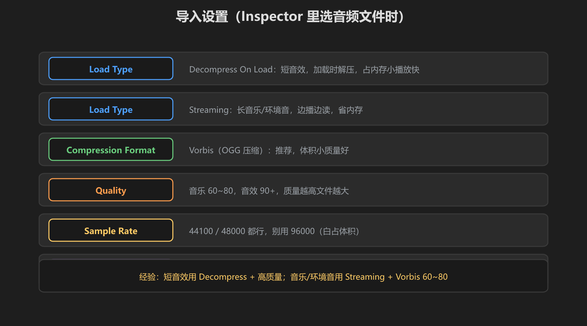

第 2 篇：音频文件与导入 — WAV/MP3/OGG 怎么选
拿到音频文件只是第一步。格式选错、导入设置不对，会白占包体和内存。这一篇解决"选什么格式、怎么导入"。
1. 三种常见格式

图：WAV 无损但大，MP3/OGG 压缩但小 —— 按用途选
| 格式 | 特点 | 适合 | VRChat |
|---|---|---|---|
| WAV | 无损、文件大 | 短音效、UI 点击 | 支持（上传会转码） |
| MP3 | 有损、体积小 | 音乐、对白 | 支持，推荐 |
| OGG | 有损、体积小、流式友好 | 音乐、环境音 | 支持，推荐 |
一句话：短音效用 WAV，长音频用 MP3/OGG。反正 VRChat 上传时会再转码，你本地源文件小一点，世界包体就小一点。
2. 导入设置（Inspector）
把音频文件拖进 Unity 后，选中它，Inspector 里有几个关键选项：

图：Load Type、Compression、Quality、Sample Rate 四件套
| 选项 | 设置 | 说明 |
|---|---|---|
| Load Type | Decompress On Load | 短音效：加载时解压，播放快，占内存 |
| Streaming | 长音乐/环境音：边播边读，省内存 | |
| Compression | Vorbis | 压缩格式，体积小音质好（推荐） |
| Quality | 音乐 60~80 / 音效 90+ | 越高文件越大 |
| Sample Rate | 44100 / 48000 | 够了，96000 白占体积 |
| Force To Mono | 3D 音效可勾 | 体积减半；立体声音乐别勾 |
经验法则：短音效 = Decompress + 高质量；音乐/环境音 = Streaming + Vorbis 60~80。这样内存和包体都省。
3. 音频素材从哪来
- 免费音效站：Freesound、Kenney.nl、opengameart.org（注意看许可证）
- 自己录：手机录环境音（雨、风、厨房），简单降噪就能用
- 合成：用 Audacity / 免费 DAW 合成白噪音、音调
- AI 生成：部分 AI 音频工具可生成音效（检查商用授权）
学前检查清单
- 知道 WAV / MP3 / OGG 各自的适用场景
- 会设置 Load Type 和 Compression
- 为短音效和长音乐分别配了正确的导入设置